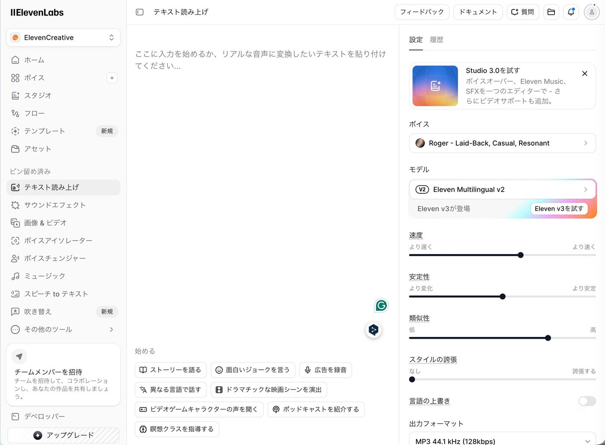
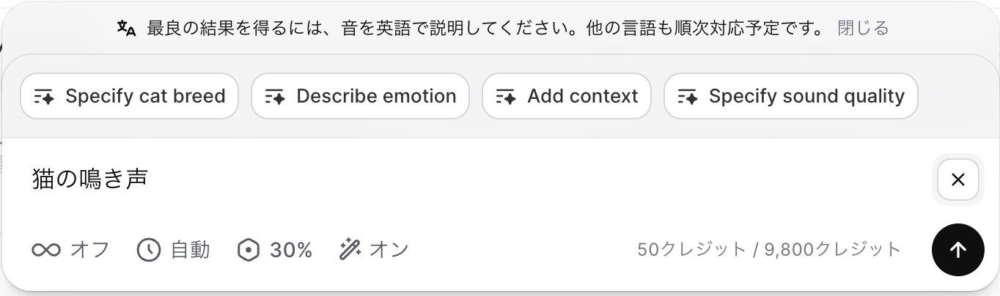
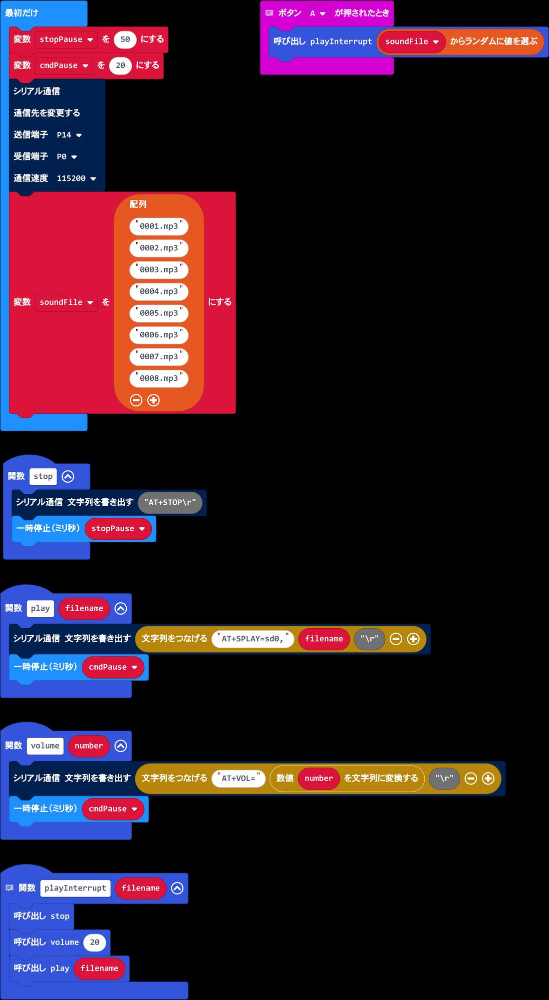
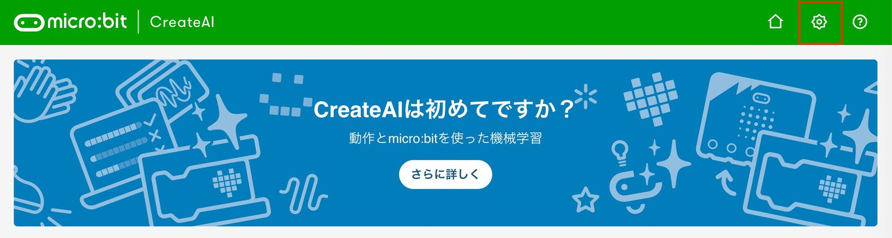
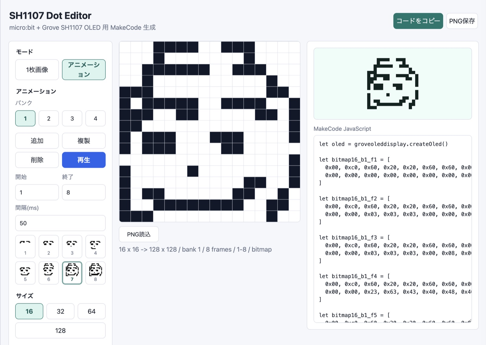
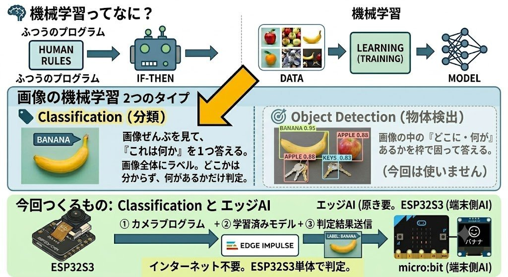

音を作る・画面に出す・画像で認識する・対話でコードを書く。4つのブロックを自分のペースで進めていきましょう。各リンクはクリックで開きます。
BLOCK 3 の画像認識は環境構築に時間がかかります。授業内で全員のインストールを待つと1コマ消えるので、下記だけは事前に各自のPCで済ませてきてください。
esp32 by Espressif Systems（バージョン 2.0.4）をインストールまずは鳴らす「音そのもの」を生成AIで作ります。今回は ElevenLabs というサービスを使います。
① アカウントを作る（初回のみ）
✦ElevenLabs（日本語トップ）② 効果音を生成する
✦ElevenLabs: Sound Effects

③ microSDカードに書き込む
ダウンロードした効果音を、mp3プレーヤーで鳴らせるように microSD に入れます。
0001.mp3 0002.mp3 0003.mp3 …のように 連番 にする作った効果音を鳴らすための基本モジュールを動かします。共有プロジェクトを開いて中身を確認しましょう。
▶MakeCode: mp3playerVer4プログラムをざっと解説
まず mp3player を P0 に接続します。このマイコンは 「ATコマンド」 という命令文を受け付けるので、ATコマンドを送って 曲の再生・音量変更・停止 などを行う関数（play / volume / stop）をあらかじめ用意しておきます。
サンプルでは、配列に 0001.mp3 〜 0008.mp3 の8つのファイル名を保持しておき、Aボタンを押すとその中からランダムに1つ選んで再生します。先ほど microSD に入れた連番ファイルが、ここで呼び出されるわけです。

やってみよう
加速度センサーのデータを集めて、振り方のモーションを分類するモデルを学習させます。
✦micro:bit CreateAI
学習できたら → MakeCode でプログラムにする
データサンプルが取れて、モデルのテストである程度モーションが認識できるようになったら、「MakeCodeで編集」ボタンを押すとコーディング画面に移ります。
https://createai.microbit.org/code です。学習したモデルが組み込まれた特別な環境なので、いつもの makecode.microbit.org と混同しないように。
先ほどの mp3 再生プログラムを移植する
https://createai.microbit.org/code 側の 「JavaScript」タブをクリックして、コピーしたコードをペーストするここでは、OLEDドットエディタで編集した静止画やアニメを、micro:bit につないだ OLED ディスプレイに表示させてみましょう！
まずはアニメ用のコマ絵を描くツールを触ってみます。ここで描いた絵が、さきほどのコードの bitmap16_0 のようなデータになります。

使い方
OLEDディスプレイへの表示の基本を確認します。
プログラムをざっと解説
① OLEDの準備：最初に createOled() で OLEDディスプレイを使えるようにします（oled という名前で扱います）。
② 絵のデータを登録：bitmap16_0 と bitmap16_1 という2つの配列が、ドットエディタで描いた 16×16のドット絵データです。これを setAnimation16Frame で 1番・2番として登録しておきます。
※ 配列の中の数字が、点を打つ/打たないのパターンを表しています。ドットエディタが自動で書き出してくれます。
③ ボタンで表示を切り替え：
showRegisteredAnimation16Frame(1, 0)）showRegisteredAnimation16Frame(2, 0)）④ A+B同時押しでアニメ：ずっと の中で、A＋Bが同時に押されている間 showRegisteredAnimation16(0, 2) を呼び、登録した 1番と2番の絵を切り替えてパラパラアニメのように見せています。
⑤ ロゴをタッチすると表示が消える：micro:bit 上部の ロゴ（金色の端子）に触れると clearDisplayFast が働き、画面の表示が消えます。
アニメ再生に使う oled や setAnimation16Frame などのブロックは、最初から入っているわけではありません。下のライブラリを拡張機能として追加すると使えるようになります。
追加するときは、この URL を バージョン（#v0.0.19）まで含めてそのまま貼り付けてください。
https://github.com/kanejun06/pxt-OledDisplay-fast#v0.0.19
oled 関連のブロックが増えていればOK#v0.0.19 はバージョン指定です。これを付けずに貼ると別のバージョンが入ってしまうことがあるので、URL の末尾まで省略せずに貼り付けましょう。ここでは ESP32S3 のカメラで「目の前に何があるか」を機械学習で見分けて、その結果を micro:bit に送って表示します。まずは全体像をつかみましょう。

ESP32S3で機械学習・画像認識を動かすための環境を作ります。（当日までに各自で済ませてくる）下のリンクと手順に沿って進めてください。
① Arduino IDE をインストール
公式サイトからお使いのOS（Windows / macOS）に合うものをダウンロードしてインストールします。
⬇Arduino IDE 公式ダウンロード (arduino.cc) ?インストール手順（公式ヘルプ）② ESP32 ボードを追加（ボードマネージャ）
ESP32S3 を扱えるように、ボード定義を追加します。
https://espressif.github.io/arduino-esp32/package_esp32_index.json
esp32 と入力し、esp32 by Espressif Systems を見つけるXIAO_ESP32S3 を選択OPI PSRAM にするのも忘れずに（詳細は下のCODEステップ参照）Edge Impulseで画像分類モデルを作り、Arduino用ライブラリ（zip）として書き出します。
Edge Impulseのプロジェクト名を、半角の大文字で正確に：
とします。プロジェクト名から書き出すライブラリ名が自動で決まるため、これを揃えると全員のライブラリが CL_inferencing で同一になり、下のスケッチを1文字も編集せずコピペするだけで動きます。
※ cl（小文字）や C L（スペース入り）は別名になります。必ず半角大文字2字 CL で。
作成フロー（設定が多いので順番どおりに）
所要 30分目安。ログインは studio.edgeimpulse.com から。
生成した zip を Arduino IDE に取り込む
Sketch > Include Library > Add .ZIP Library...File > Examples > CL_inferencingコードは編集しません。下のスケッチをまるごとコピーして、Arduino IDEのエディタに貼り付けるだけです（プロジェクト名を CL に統一しているので、そのまま通ります）。
/* Edge Impulse Arduino examples
* Copyright (c) 2022 EdgeImpulse Inc.
*
* Permission is hereby granted, free of charge, to any person obtaining a copy
* of this software and associated documentation files (the "Software"), to deal
* in the Software without restriction, including without limitation the rights
* to use, copy, modify, merge, publish, distribute, sublicense, and/or sell
* copies of the Software, and to permit persons to whom the Software is
* furnished to do so, subject to the following conditions:
*
* The above copyright notice and this permission notice shall be included in
* all copies or substantial portions of the Software.
*
* THE SOFTWARE IS PROVIDED "AS IS", WITHOUT WARRANTY OF ANY KIND, EXPRESS OR
* IMPLIED, INCLUDING BUT NOT LIMITED TO THE WARRANTIES OF MERCHANTABILITY,
* FITNESS FOR A PARTICULAR PURPOSE AND NONINFRINGEMENT. IN NO EVENT SHALL THE
* AUTHORS OR COPYRIGHT HOLDERS BE LIABLE FOR ANY CLAIM, DAMAGES OR OTHER
* LIABILITY, WHETHER IN AN ACTION OF CONTRACT, TORT OR OTHERWISE, ARISING FROM,
* OUT OF OR IN CONNECTION WITH THE SOFTWARE OR THE USE OR OTHER DEALINGS IN THE
* SOFTWARE.
*/
// These sketches are tested with 2.0.4 ESP32 Arduino Core
// https://github.com/espressif/arduino-esp32/releases/tag/2.0.4
/* Includes ---------------------------------------------------------------- */
#define EI_CLASSIFIER_TFLITE_ENABLE_ESP_NN 0
#include <CL_inferencing.h>
#include "edge-impulse-sdk/dsp/image/image.hpp"
#include "esp_camera.h"
// Select camera model - find more camera models in camera_pins.h file here
// https://github.com/espressif/arduino-esp32/blob/master/libraries/ESP32/examples/Camera/CameraWebServer/camera_pins.h
#define PWDN_GPIO_NUM -1
#define RESET_GPIO_NUM -1
#define XCLK_GPIO_NUM 10
#define SIOD_GPIO_NUM 40
#define SIOC_GPIO_NUM 39
#define Y9_GPIO_NUM 48
#define Y8_GPIO_NUM 11
#define Y7_GPIO_NUM 12
#define Y6_GPIO_NUM 14
#define Y5_GPIO_NUM 16
#define Y4_GPIO_NUM 18
#define Y3_GPIO_NUM 17
#define Y2_GPIO_NUM 15
#define VSYNC_GPIO_NUM 38
#define HREF_GPIO_NUM 47
#define PCLK_GPIO_NUM 13
/* Constant defines -------------------------------------------------------- */
#define EI_CAMERA_RAW_FRAME_BUFFER_COLS 320
#define EI_CAMERA_RAW_FRAME_BUFFER_ROWS 240
#define EI_CAMERA_FRAME_BYTE_SIZE 3
/* Private variables ------------------------------------------------------- */
static bool debug_nn = false; // Set this to true to see e.g. features generated from the raw signal
static bool is_initialised = false;
uint8_t *snapshot_buf; //points to the output of the capture
static camera_config_t camera_config = {
.pin_pwdn = PWDN_GPIO_NUM,
.pin_reset = RESET_GPIO_NUM,
.pin_xclk = XCLK_GPIO_NUM,
.pin_sscb_sda = SIOD_GPIO_NUM,
.pin_sscb_scl = SIOC_GPIO_NUM,
.pin_d7 = Y9_GPIO_NUM,
.pin_d6 = Y8_GPIO_NUM,
.pin_d5 = Y7_GPIO_NUM,
.pin_d4 = Y6_GPIO_NUM,
.pin_d3 = Y5_GPIO_NUM,
.pin_d2 = Y4_GPIO_NUM,
.pin_d1 = Y3_GPIO_NUM,
.pin_d0 = Y2_GPIO_NUM,
.pin_vsync = VSYNC_GPIO_NUM,
.pin_href = HREF_GPIO_NUM,
.pin_pclk = PCLK_GPIO_NUM,
//XCLK 20MHz or 10MHz for OV2640 double FPS (Experimental)
.xclk_freq_hz = 20000000,
.ledc_timer = LEDC_TIMER_0,
.ledc_channel = LEDC_CHANNEL_0,
.pixel_format = PIXFORMAT_JPEG, //YUV422,GRAYSCALE,RGB565,JPEG
.frame_size = FRAMESIZE_QVGA, //QQVGA-UXGA Do not use sizes above QVGA when not JPEG
.jpeg_quality = 12, //0-63 lower number means higher quality
.fb_count = 1, //if more than one, i2s runs in continuous mode. Use only with JPEG
.fb_location = CAMERA_FB_IN_PSRAM,
.grab_mode = CAMERA_GRAB_WHEN_EMPTY,
};
/* Function definitions ------------------------------------------------------- */
bool ei_camera_init(void);
void ei_camera_deinit(void);
bool ei_camera_capture(uint32_t img_width, uint32_t img_height, uint8_t *out_buf) ;
/**
* @brief Arduino setup function
*/
void setup()
{
// put your setup code here, to run once:
Serial.begin(115200);
Serial1.begin(115200, SERIAL_8N1, D7, D6);
//Serial1.println("UART OK"); // ← ここに入れる
//comment out the below line to start inference immediately after upload
//while (!Serial);
Serial.println("Edge Impulse Inferencing Demo");
if (ei_camera_init() == false) {
ei_printf("Failed to initialize Camera!\r\n");
}
else {
ei_printf("Camera initialized\r\n");
}
ei_printf("\nStarting continious inference in 2 seconds...\n");
ei_sleep(2000);
}
/**
* @brief Get data and run inferencing
*
* @param[in] debug Get debug info if true
*/
void loop()
{
// instead of wait_ms, we'll wait on the signal, this allows threads to cancel us...
if (ei_sleep(5) != EI_IMPULSE_OK) {
return;
}
//snapshot_buf = (uint8_t*)malloc(EI_CAMERA_RAW_FRAME_BUFFER_COLS * EI_CAMERA_RAW_FRAME_BUFFER_ROWS * EI_CAMERA_FRAME_BYTE_SIZE);
snapshot_buf = (uint8_t*)ps_malloc(EI_CAMERA_RAW_FRAME_BUFFER_COLS * EI_CAMERA_RAW_FRAME_BUFFER_ROWS * EI_CAMERA_FRAME_BYTE_SIZE);
// check if allocation was successful
if(snapshot_buf == nullptr) {
ei_printf("ERR: Failed to allocate snapshot buffer!\n");
return;
}
ei::signal_t signal;
signal.total_length = EI_CLASSIFIER_INPUT_WIDTH * EI_CLASSIFIER_INPUT_HEIGHT;
signal.get_data = &ei_camera_get_data;
if (ei_camera_capture((size_t)EI_CLASSIFIER_INPUT_WIDTH, (size_t)EI_CLASSIFIER_INPUT_HEIGHT, snapshot_buf) == false) {
ei_printf("Failed to capture image\r\n");
free(snapshot_buf);
return;
}
// Run the classifier
ei_impulse_result_t result = { 0 };
//Serial.printf("Free heap: %u\n", ESP.getFreeHeap());
//Serial.printf("Free PSRAM: %u\n", ESP.getFreePsram());
EI_IMPULSE_ERROR err = run_classifier(&signal, &result, debug_nn);
if (err != EI_IMPULSE_OK) {
ei_printf("ERR: Failed to run classifier (%d)\n", err);
free(snapshot_buf); // ***追加0528
return;
}
// print the predictions
ei_printf("Predictions (DSP: %d ms., Classification: %d ms., Anomaly: %d ms.): \n",
result.timing.dsp, result.timing.classification, result.timing.anomaly);
#if EI_CLASSIFIER_OBJECT_DETECTION == 1
ei_printf("Object detection bounding boxes:\r\n");
for (uint32_t i = 0; i < result.bounding_boxes_count; i++) {
ei_impulse_result_bounding_box_t bb = result.bounding_boxes[i];
if (bb.value == 0) {
continue;
}
ei_printf(" %s (%f) [ x: %u, y: %u, width: %u, height: %u ]\r\n",
bb.label,
bb.value,
bb.x,
bb.y,
bb.width,
bb.height);
}
// Print the prediction results (classification)
#else
ei_printf("Predictions:\r\n");
for (uint16_t i = 0; i < EI_CLASSIFIER_LABEL_COUNT; i++) {
ei_printf(" %s: ", ei_classifier_inferencing_categories[i]);
ei_printf("%.5f\r\n", result.classification[i].value);
}
ssize_t maximum_score_index = -1;
for (size_t i = 0; i < EI_CLASSIFIER_LABEL_COUNT; i++) {
if (maximum_score_index < 0) {
maximum_score_index = i;
}
else if (result.classification[i].value > result.classification[maximum_score_index].value) {
maximum_score_index = i;
}
}
Serial1.printf("%s\n", maximum_score_index < 0 ? "" : ei_classifier_inferencing_categories[maximum_score_index]);
#endif
// Print anomaly result (if it exists)
#if EI_CLASSIFIER_HAS_ANOMALY
ei_printf("Anomaly prediction: %.3f\r\n", result.anomaly);
#endif
#if EI_CLASSIFIER_HAS_VISUAL_ANOMALY
ei_printf("Visual anomalies:\r\n");
for (uint32_t i = 0; i < result.visual_ad_count; i++) {
ei_impulse_result_bounding_box_t bb = result.visual_ad_grid_cells[i];
if (bb.value == 0) {
continue;
}
ei_printf(" %s (%f) [ x: %u, y: %u, width: %u, height: %u ]\r\n",
bb.label,
bb.value,
bb.x,
bb.y,
bb.width,
bb.height);
}
#endif
free(snapshot_buf);
}
/**
* @brief Setup image sensor & start streaming
*
* @retval false if initialisation failed
*/
bool ei_camera_init(void) {
if (is_initialised) return true;
#if defined(CAMERA_MODEL_ESP_EYE)
pinMode(13, INPUT_PULLUP);
pinMode(14, INPUT_PULLUP);
#endif
//initialize the camera
esp_err_t err = esp_camera_init(&camera_config);
if (err != ESP_OK) {
Serial.printf("Camera init failed with error 0x%x\n", err);
return false;
}
sensor_t * s = esp_camera_sensor_get();
// initial sensors are flipped vertically and colors are a bit saturated
if (s->id.PID == OV3660_PID) {
s->set_vflip(s, 1); // flip it back
s->set_brightness(s, 1); // up the brightness just a bit
s->set_saturation(s, 0); // lower the saturation
}
#if defined(CAMERA_MODEL_M5STACK_WIDE)
s->set_vflip(s, 1);
s->set_hmirror(s, 1);
#elif defined(CAMERA_MODEL_ESP_EYE)
s->set_vflip(s, 1);
s->set_hmirror(s, 1);
s->set_awb_gain(s, 1);
#endif
is_initialised = true;
return true;
}
/**
* @brief Stop streaming of sensor data
*/
void ei_camera_deinit(void) {
//deinitialize the camera
esp_err_t err = esp_camera_deinit();
if (err != ESP_OK)
{
ei_printf("Camera deinit failed\n");
return;
}
is_initialised = false;
return;
}
/**
* @brief Capture, rescale and crop image
*
* @param[in] img_width width of output image
* @param[in] img_height height of output image
* @param[in] out_buf pointer to store output image, NULL may be used
* if ei_camera_frame_buffer is to be used for capture and resize/cropping.
*
* @retval false if not initialised, image captured, rescaled or cropped failed
*
*/
bool ei_camera_capture(uint32_t img_width, uint32_t img_height, uint8_t *out_buf) {
bool do_resize = false;
if (!is_initialised) {
ei_printf("ERR: Camera is not initialized\r\n");
return false;
}
camera_fb_t *fb = esp_camera_fb_get();
if (!fb) {
ei_printf("Camera capture failed\n");
return false;
}
bool converted = fmt2rgb888(fb->buf, fb->len, PIXFORMAT_JPEG, snapshot_buf);
esp_camera_fb_return(fb);
if(!converted){
ei_printf("Conversion failed\n");
return false;
}
if ((img_width != EI_CAMERA_RAW_FRAME_BUFFER_COLS)
|| (img_height != EI_CAMERA_RAW_FRAME_BUFFER_ROWS)) {
do_resize = true;
}
if (do_resize) {
ei::image::processing::crop_and_interpolate_rgb888(
out_buf,
EI_CAMERA_RAW_FRAME_BUFFER_COLS,
EI_CAMERA_RAW_FRAME_BUFFER_ROWS,
out_buf,
img_width,
img_height);
}
return true;
}
static int ei_camera_get_data(size_t offset, size_t length, float *out_ptr)
{
// we already have a RGB888 buffer, so recalculate offset into pixel index
size_t pixel_ix = offset * 3;
size_t pixels_left = length;
size_t out_ptr_ix = 0;
while (pixels_left != 0) {
// Swap BGR to RGB here
// due to https://github.com/espressif/esp32-camera/issues/379
out_ptr[out_ptr_ix] = (snapshot_buf[pixel_ix + 2] << 16) + (snapshot_buf[pixel_ix + 1] << 8) + snapshot_buf[pixel_ix];
// go to the next pixel
out_ptr_ix++;
pixel_ix+=3;
pixels_left--;
}
// and done!
return 0;
}
#if !defined(EI_CLASSIFIER_SENSOR) || EI_CLASSIFIER_SENSOR != EI_CLASSIFIER_SENSOR_CAMERA
#error "Invalid model for current sensor"
#endif
この2つが合っていないと、コンパイルや書き込みに失敗したり、カメラが動きません。Tools メニューから設定します。
※ PSRAM を OPI PSRAM にしないと、カメラ画像用のメモリが確保できずエラーになります。忘れやすいので要チェック。
書き込みが終わったら、USBケーブルを外してから micro:bit の P0 に接続してください。
micro:bit と ESP32S3 の両方に電源が供給されている状態で接続すると、故障の原因になります。必ず片方の電源（USB）を抜いてからつなぎましょう。
※ カメラのピン設定やUART設定（Serial1.begin(...D7, D6)）も全員共通なので触りません。使うボードが同じなら、このままで動きます。
過去に別名でライブラリを入れていた等で競合し、コンパイルに失敗する場合、Arduino/libraries フォルダにアクセスして該当ライブラリ（古い *_inferencing など）を削除する必要があります。
この libraries フォルダの場所は OS で違います。初期設定（デフォルト）の場合、だいたい次の場所にあります：
%USERPROFILE%\Documents\Arduino\libraries と入れても開けます。Cmd+Shift+G →上のパスを貼り付けで開けます（~ は自分のホーム）。※ 正確な場所は File > Preferences の「スケッチブックの保存場所」の下にある libraries フォルダです。場所を変更している人はそちらを見てください。
プロジェクト名を CL に統一していれば基本は起きませんが、もし削除が必要になったら手を挙げてください。フォルダの場所と消すべきものを一緒に確認します。
ESP32S3側の認識結果を micro:bit が受け取り、OLEDにテキスト表示します。受信側の共有プロジェクトはこちら。
▶MakeCode: メッセージ受信 + OLEDテキスト表示LEDの制御も、Copilotと対話するだけでここまでできる、という例を見てから、自分でも試してみましょう。
▶MakeCode: Copilot × LED の例最初のひとことは、こんな感じで始めます。
AIに任せきりにするのではなく、「何を作りたいか」を自分の側がはっきりさせるのが鍵です。次の2つを意識しましょう。
該当する項目が見つかりませんでした。